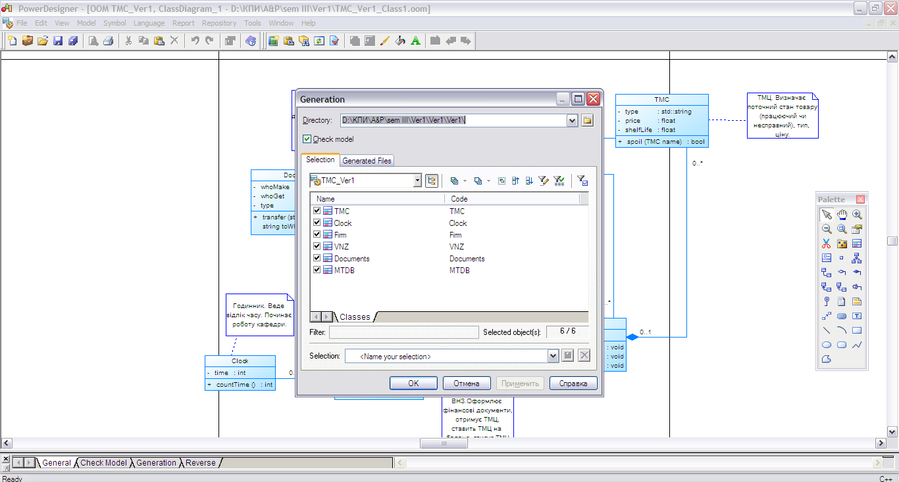
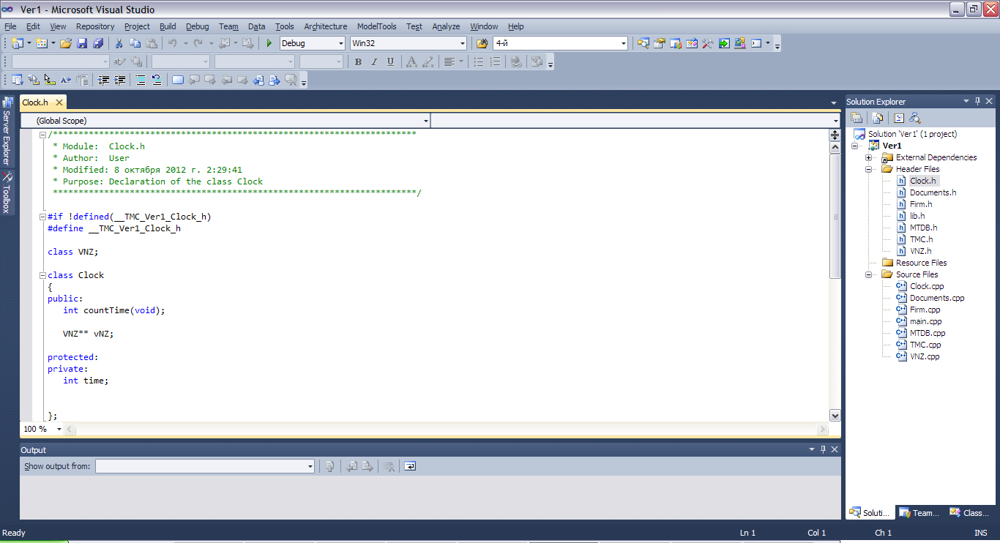

Технологія розробки даної версії
Створення програмного коду
Для початку роботи над програмою необхідно створити проект у Microsoft Visual Studio. При наявності діаграми класів проект можна не створювати вручну, а згенерувати за допомогою програми Sybase PowerDesigner. Для цього у вікні даної програми з відкритою діаграмою класів треба обрати в меню Language > Generate C++ Code. У вікні, що відкрилося, обрати папку, в яку буде збережено проект, та відмітити класи, що мають бути згенеровані. Після цього слід натиснути ОК.
Після виконання таких дій буде створено проект із обраними класами, атрибутами та методами для них і зв'язками мід класами.

[повернутися]
Специфікація функцій для даної версії
| Прототип функції | Семантика | Параметри | Призначення (семантика) параметрів |
|---|---|---|---|
int Clock::countTime(void) |
|||
string Documents::transfer(string fromWh, string toWh, int time) |
string fromWh, |
||
void Firm::makeDocs(void) |
|||
void Firm::getDocs(void) |
|||
void Firm::supplyTMС(void) |
|||
void MTDB::add(void) |
|||
void MTDB::change(void) |
|||
void MTDB::del(void) |
|||
bool TMС::spoil(TMС name) |
TMС name |
||
void VNZ::makeDocs(void) |
|||
void VNZ::getDocs(void) |
|||
void VNZ::getTMC(void) |
|||
void VNZ::putBalance(void) |
|||
void VNZ::writeOff(void) |
[повернутися]